1550
m.s.n.m.
- OrigenCundinamarca, finca Barro Blanco
- CaficultorDago Martínez
- VarietalCastillo-Típica (blend)
- BeneficioLavado

En lengua muisca, YTA significa mano.
La mano que siembra la vida en el corazón de la tierra. La mano que cuida el fruto, que espera con paciencia y cosecha con respeto. La mano que transforma el grano, revelando aromas, memorias y origen. La mano que prepara el café, que reúne historias y acerca corazones.
Porque detrás de cada cosecha hay dedicación. Detrás de cada taza hay tradición. Y detrás de cada encuentro, siempre habrá una mano.
Cada bolsa lleva el mismo isotipo que firma esta historia: las manos que siembran, cosechan y entregan. Así se ve y así se siente antes de llegar a tu taza.
Pide el tuyo por WhatsApp

¿Quieres ver el origen, la altitud y el perfil de taza de cada lote en un solo documento?
Descargar catálogo en PDFCada lote de YTA lleva el nombre de quien lo cultivó. La trazabilidad no es un sello de mercadeo, es una promesa: sabemos de qué tierra viene tu café y quién lo cosechó con sus manos.
Escríbenos por WhatsApp y te contamos disponibilidad, presentaciones y formas de pedido.
Escríbenos por WhatsAppConoce y prueba el café en nuestro punto de venta.
Pide tu café para que llegue directo a tu casa.
Café de especialidad para hoteles, restaurantes y cafeterías.
Detalles con identidad colombiana para tu empresa o celebración.